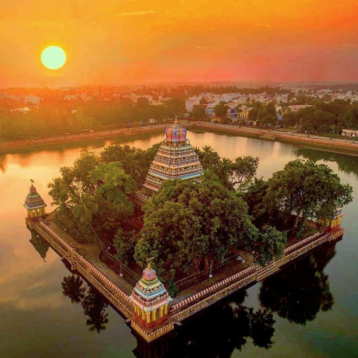

A massive temple tank associated with the Vandiyur Mariamman Temple.
Sprawling water reservoir with a central mandapam dedicated to Lord Ganesh.
Famous for the Float Festival (Teppam) held annually, where idols are taken on decorated floats across the tank.